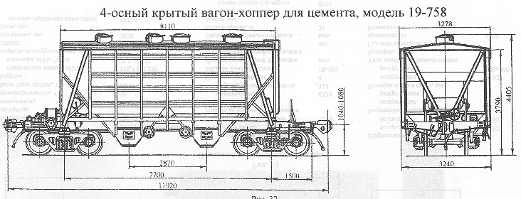

Назначение: для перевозки насыпью цемента и других порошкообразных и гранулированных грузов, требующих защиты от атмосферных осадков
Параметры
| Номер проекта | 758.00.000 |
| Технические условия | ТУ24-05-543-85 |
| Модель вагона | 11-758 |
| Тип вагона | 930 |
| Изготовитель | КрВЗ |
| Грузоподъемность, т | 72 |
| Масса тары вагона, т | 19,5 |
| Нагрузка: статическая осевая, кН(тс) |
228,3(23,25) |
| погонная, кН/м(тс/м) | 75,23(7,67) |
| Скорость конструкционная, км/ч | 120 |
| Габарит | 1-Т |
| База вагона, мм | 7700 |
| Длина, мм: по осям сцепления автосцепок |
11920 |
| по концевым балкам рамы (длина рамы) | 10700 |
| Ширина максимальная, мм: | 3278 |
| Высота от уровня верха головок рельсов, мм максимальная |
4405 |
| до разгрузочных устройств | 315 |
| Количество осей, шт. | 4 |
| Модель 2-осной тележки | 18-100 |
| Наличие переходной площадки | есть |
| Наличие переходной площадки с ручным тормозом | нет |
| Наличие стояночного тормоза | есть |
| Объем кузова, м³ | 60 |
| Длина,мм: по верхней обвязке |
8110 |
| кузова внутри (по верху) | 7910 |
| Ширина максимальная,мм: по крыше |
3278 |
| по стойкам | 3240 |
| Количество люков,шт.: загрузочных |
4 |
| разгрузочных | 4 |
| Размеры люка в свету, мм: загрузочных |
Ø621 |
| разгрузочных | 500х400 |
| Угол наклона торцовых стенок бункеров, град | 50 |
| Год постановки на серийное производство | 1986 |
| Возможность установки буферов | нет |